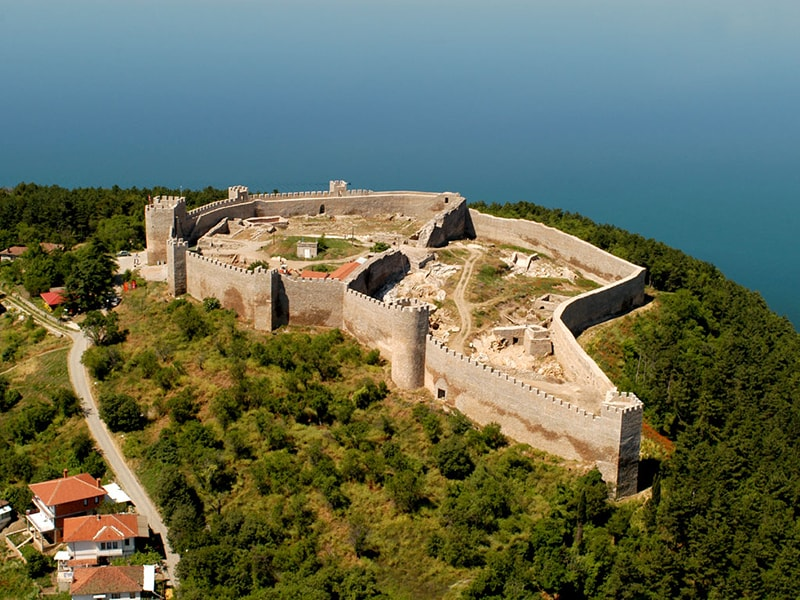
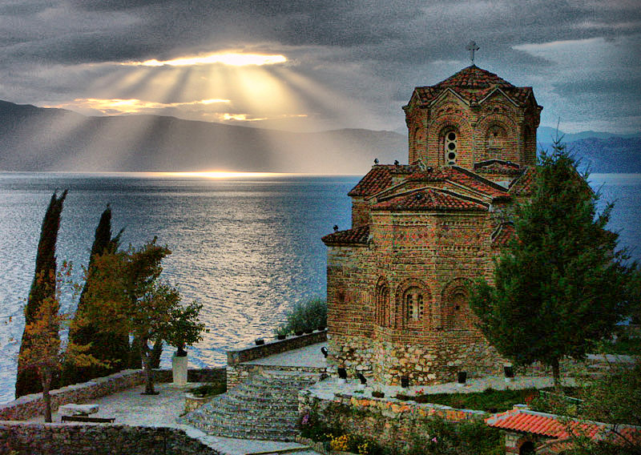
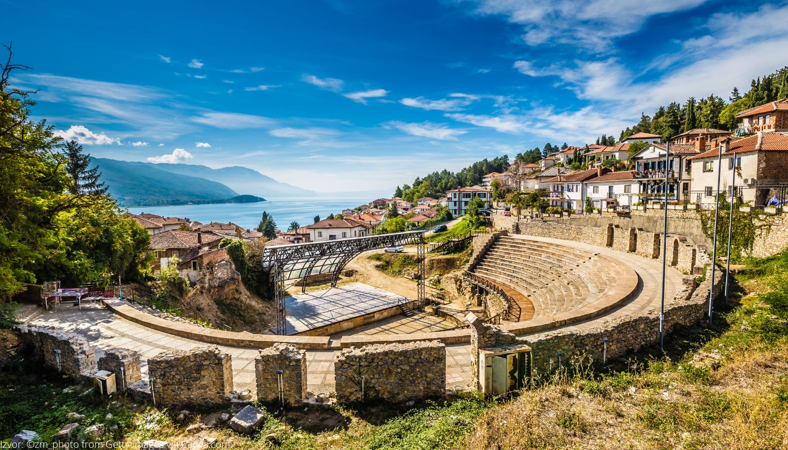

Добредојдовте во Охрид
Балканскиот Ерусалим и бисерот на Македонија.
Зошто да го посетите Охрид?
📜 Историја
Истражете го градот на УНЕСКО со вековни цркви, тврдини и антички театар.
🌳 Природа
Уживајте во кристално чистото езеро и недопрената природа на планината Галичица.
🎨 Култура
Посетете ги бројните манифестации, музеи и работилници за охридски бисер.
Незаборавни Локации

Самуилова тврдина
Искачете се до тврдината за спектакуларен панорамски поглед на целиот град и езерото.
Истражи
Црква Св. Јован Канео
Сместена на карпа над езерото, нуди една од најпрепознатливите глетки на Охрид.
Истражи
Антички театар
Единствениот хеленистички театар во Македонија, кој и денес се користи за настани.
Истражи